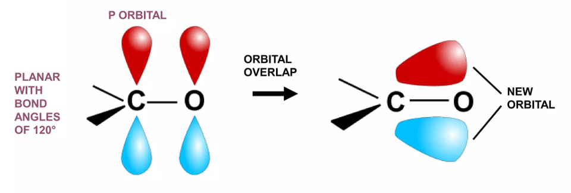
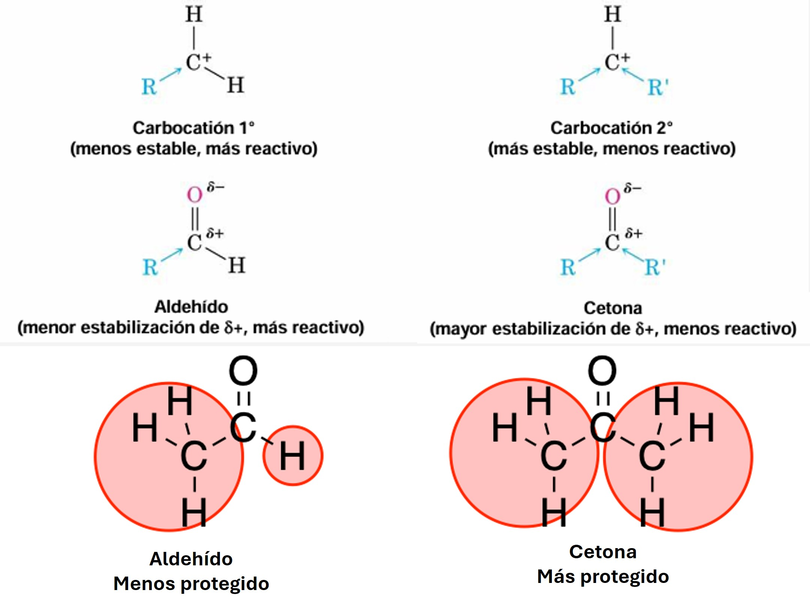
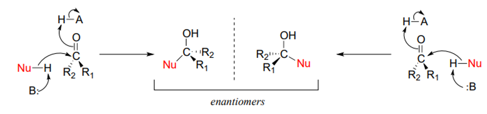
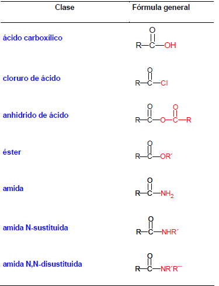
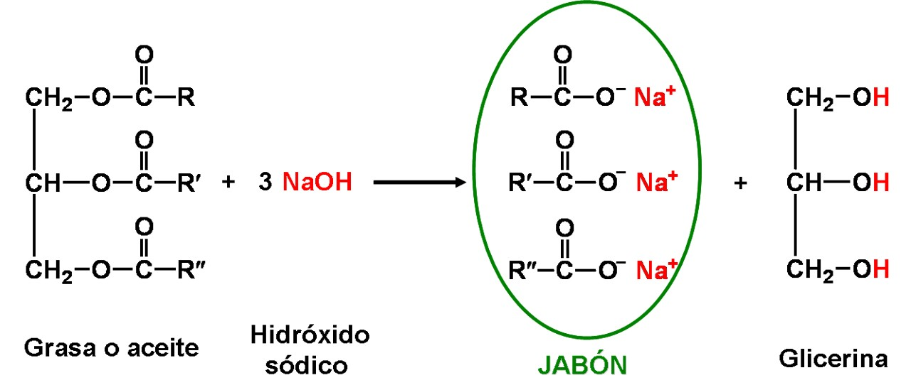

Química Orgánica
Especializada para alumnos de Medicina
Capítulo 9: Aldehídos, Cetonas, Ácidos Carboxílicos y Derivados
Especializada para alumnos de Medicina
Capítulo 9: Aldehídos, Cetonas, Ácidos Carboxílicos y Derivados

El orbital p sin hibridar del carbono se solapa con un orbital p del oxígeno formando el enlace π.
Porque está polarizado. La atracción electrostática entre el Cδ⁺ y Oδ⁻ añade carácter iónico al enlace, acortándolo y fortaleciéndolo además del solapamiento π.

Los aldehídos tienen carbocatión 1° (menos estable, más reactivo); las cetonas tienen carbocatión 2° (más estable, menos reactivo).

El carbono pasa de sp² (trigonal) a sp³ (tetraédrico).
| Reactivo | Condiciones | Cambio de color | Producto |
|---|---|---|---|
| Dicromato (Cr₂O₇²⁻) | Medio ácido | Naranja → Verde (Cr³⁺) | Ácido carboxílico |
| Permanganato (MnO₄⁻) | Medio básico/ácido | Violeta → Marrón | Ácido carboxílico |
| Tollens [Ag(NH₃)₂]⁺ | Básico suave | Espejo de plata | Ácido carboxílico |
| Fehling/Benedict (Cu²) | Básico, calor | Azul → Rojo ladrillo (Cu₂O) | Ácido carboxílico |

Todos presentan resonancia con el grupo carbonilo.
El cloro es muy electronegativo y ejerce fuerte efecto inductivo atrayendo electrones, pero es mal donador por resonancia (sus electrones están en orbital 3p, mal solapamiento con 2p del carbono). Esto hace al carbonilo muy electrofílico. En cambio, el oxígeno del éster es mejor donador por resonancia, estabilizando el carbonilo.

Las grasas son ésteres de ácidos carboxílicos de cadena larga con glicerol.
Haz clic en cada nodo para desplegar u ocultar sus ramas.
Haz clic en la tarjeta para voltearla y ver la respuesta. Luego califícate con honestidad.
Se elevan acetona, acetoacetato y β-hidroxibutirato. En ausencia de insulina, el cuerpo usa grasas como energía, produciendo cuerpos cetónicos en el hígado. La acetona es una cetona que se exhala (aliento cetósico).
El acetaldehído es un aldehído tóxico (más tóxico que el etanol). Se acumula cuando la aldehído deshidrogenasa no puede procesarlo rápido enough. Causa vasodilatación, náuseas, taquicardia.
El formaldehído (HCHO) es el aldehído más reactivo (sin grupos alquilo que estabilicen). Reacciona con grupos amino de proteínas y ADN, entrecruzándolos (fijación). Es carcinógeno.
Todos tienen un ácido carboxílico (-COOH). Este grupo es esencial para su actividad antiinflamatoria (interactúa con COX). La aspirina es un éster (acetil salicílico) que se hidroliza in vivo.
El anillo β-lactámico (amida cíclica de 4 miembros) es muy reactivo por tensión de anillo. Reacciona con enzimas transpeptidasas bacterianas (inhibición irreversible), bloqueando síntesis de pared celular.
Los ésteres son más lipofílicos que los ácidos carboxílicos, mejorando absorción. Una vez absorbidos, las esterasas los hidrolizan liberando el fármaco activo (ácido).
La glucosa existe principalmente como hemiacetal cíclico (piranosa). El aldehído reacciona intramolecularmente con un OH formando un anillo de 6 miembros. Solo una pequeña fracción está como aldehído libre (azúcar reductor).
Las amidas son los derivados de ácido más estables por fuerte resonancia (el N dona electrones al carbonilo). Requieren enzimas (proteasas) o condiciones drásticas para hidrolizarse.
Aldehídos → ácidos carboxílicos (Tollens, Fehling, dicromato). Cetonas NO se oxidan (rompería C-C).
Cloruro > Anhídrido > Éster > Amida. De más a menos reactivo.
Aldehídos → alcoholes primarios (1°). Cetonas → alcoholes secundarios (2°).
Reactivo de Tollens [Ag(NH₃)₂]⁺ con aldehídos forma espejo de plata (Ag metálico). Cetonas: no reacciona.
Cu²⁺ (azul) + aldehído → Cu₂O (óxido cuproso, rojo ladrillo). Detecta azúcares reductores.
Cr₂O₇²⁻ (naranja) oxida aldehídos → Cr³⁺ (verde). Cambio de color característico.
La mayoría de cetonas/aldehídos: equilibrio favorece carbonilo. Excepción: formaldehído 99.9% hidrato.
LiAlH₄: muy reactivo, reduce TODO (ácidos, ésteres, amidas). NaBH₄: suave, selectivo (solo aldehídos/cetonas).
Las amidas son los derivados de ácido más estables (N es buen donador). Hidrólisis requiere condiciones drásticas.
Hidrólisis básica de ésteres (grasas) → jabón (sales de ácidos grasos) + glicerol. Irreversible.
Haz clic en cada término para ver su definición:
Error: proponer oxidación de cetonas con KMnO₄ o K₂Cr₂O₇.
Error: asumir que cetonas son más reactivas.
Error: amida > éster > anhídrido > cloruro.
Error: usar Tollens para identificar cetonas.
Error: asumir que benzaldehído da positivo.
Error: usar LiAlH₄ para reducir solo un aldehído/cetona.
Error: proponer equilibrio en hidrólisis básica de ésteres.
Error: proponer hidrólisis de amidas en condiciones suaves.
Error: llamar acetal a un hemiacetal.
Error: no explicar reactividad por resonancia.
Cada ciclo muestra 10 preguntas al azar de una base de 30. Cada vez que entras a esta pestaña o terminas un ciclo se sortean preguntas nuevas.